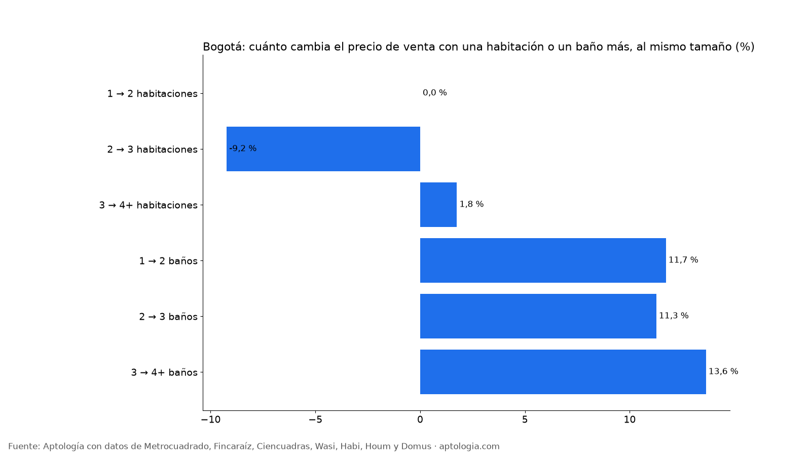

Cuánto vale una habitación o un baño extra en un apartamento en venta en Bogotá (octubre 2026)
Estudio con datos abiertos (CC BY 4.0). Versión original: https://www.aptologia.com/estudios/cuanto-vale-una-habitacion-o-bano-extra-venta-bogota-2026
En Bogotá, a igual tamaño, estrato y localidad, un apartamento en venta con un segundo baño pide 11,7 % más que uno con un solo baño, y pasar de 2 a 3 habitaciones cambia el precio en -9,2 %. Con el área fija, el baño adicional suma más valor que la habitación adicional, que solo reparte los mismos metros.
Resumen: comparamos 36.813 apartamentos en venta únicos en Bogotá del mismo estrato, localidad y rango de área.
Actualizado: 18 de octubre de 2026 (datos del 18 de octubre de 2026) · Próxima actualización: mensual.

Cuánto vale una habitación o un baño más (con el mismo área)
| Cambio | Diferencia de precio emparejada | Grupos comparables |
|---|---|---|
| 1 → 2 habitaciones | 0,0 % | 66 |
| 2 → 3 habitaciones | -9,2 % | 151 |
| 3 → 4+ habitaciones | +1,8 % | 82 |
| 1 → 2 baños | +11,7 % | 95 |
| 2 → 3 baños | +11,3 % | 96 |
| 3 → 4+ baños | +13,6 % | 71 |
Como se compara al mismo rango de área, una habitación más significa espacios más pequeños, y eso explica que su prima sea pequeña o negativa. El baño extra, en cambio, se paga.
Cómo usarlo para decidir: si comparas dos apartamentos del mismo tamaño, no pagues mucho más por una habitación adicional; sí tiene sentido pagar por el segundo baño si vives con más personas. Para remodelar antes de vender, agregar un baño suele valorizar más que dividir una habitación.
Preguntas frecuentes
¿Cuánto vale un baño extra en un apartamento en Bogotá? Con el mismo tamaño, estrato y localidad, pasar de 1 a 2 baños se asocia a +11,7 % en el precio pedido, y de 2 a 3 baños a +11,3 % (datos del 18 de octubre de 2026).
¿Vale más un apartamento de 3 habitaciones que uno de 2 del mismo tamaño? Poco: la diferencia emparejada es -9,2 %.
¿Qué valoriza más un apartamento, una habitación o un baño? Con el área fija, el baño adicional.
Metodología
- Fuente: avisos vivos de vivienda recogidos por la ingesta de Aptología en Metrocuadrado, Fincaraíz, Ciencuadras, Wasi, Habi, Houm y Domus, del 11 al 18 de octubre de 2026. Corte: 18 de octubre de 2026.
- Depuración: un mismo inmueble publicado varias veces se cuenta una sola vez (agrupación por portal y, entre portales, por precio, área, habitaciones y coordenadas). Se descartan precios y áreas fuera de rango y, en arriendo, se resta la administración cuando el portal la incluye en el canon.
- Qué se mide: precios pedidos (publicados), no precios de cierre.
- Comparación emparejada: mediana ponderada de las diferencias relativas de precio entre apartamentos con distinto número de habitaciones (o baños) dentro de grupos del mismo estrato, localidad, rango de área y número de baños (o habitaciones), con 6 avisos o más en cada lado. Solo cambios con 10 grupos comparables o más.
- Limitaciones: son precios pedidos en portales, que pueden diferir del valor final de arriendo o venta. La cobertura es mayor en el norte de Bogotá y en estratos 4 a 6, porque ahí se concentra la oferta publicada. Los barrios y la localidad vienen de lo que escribe cada portal; cuando falta la localidad se asigna por los avisos vecinos más cercanos.
- Datos abiertos: datos.csv, licencia CC BY 4.0.
Cómo citar
Pinzón Pineda, D. M. (2026). Cuánto vale una habitación o un baño extra en un apartamento en venta en Bogotá (octubre 2026). Aptología. https://www.aptologia.com/estudios/cuanto-vale-una-habitacion-o-bano-extra-venta-bogota-2026. Datos: datos.csv, licencia CC BY 4.0.